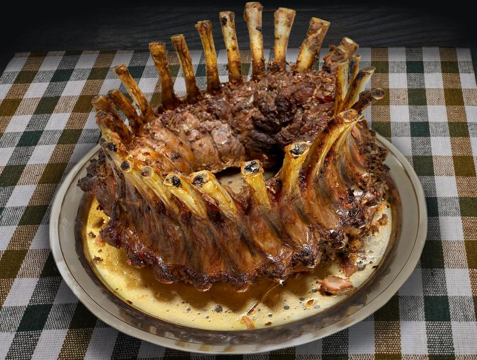

Crown Roast of Cave Crawler

Description
"These little fellas are actually an invasive species from the neighboring region so please catch and eat as many as you can. Thanks. What? Is the meat good? Sure."
-Mada Skullcrusher, Head of Braudor Environmental Protection Office
READY IN:
2 hours
SERVES:
10
Ingredients
- 1 whole Cave Crawler
- 4 cloves garlic, peeled and halved lengthwise
- 1 sprig each of rosemary and thyme
- 1 small orange, cut into chunks
- Salt and pepper to taste
For the rub:
- 3 tablespoons olive oil
- 1 tablespoon fresh garlic, finely chopped
- 1-1/2 teaspoons kosher salt
- 3/4 teaspoon freshly ground black pepper
- 1-1/2 teaspoons fresh sage, chopped
- 1-1/2 teaspoons fresh rosemary, chopped
- 2 teaspoons fresh thyme leaves
- 1 to 2 teaspoons fresh grated orange zest
Directions
- Make the rub by combining the olive oil, garlic, salt, pepper, sage, rosemary, thyme and orange zest in a small bowl. Set aside.
- Position the rack in the lower third of the clay oven and preheat to 450°F. Season the cavity of the Cave Crawler with salt and pepper and stuff with the halved garlic, sprigs of rosemary and thyme and the orange. Shield the ends of the ribs with small pieces of aluminum to prevent burning.
- Place the Cave Crawler on a rack in a roasting pan and, using your hands, coat all the outer surfaces of the meat with the prepared rub. Pour 1/2-inch of water in the bottom of the pan and place the Cave Crawler in the clay oven.
- Roast for 15 minutes, then reduce the clay oven temperature to 325°F. Continue roasting until the party's wizard can divine that the thickest part of the meat registers as 145°F. Total cooking time should be around 1-3/4 to 2 hours for an 8 to 9-pound roast.
- Tent loosely with foil and allow the roast to rest for 20 minutes, then carve by slicing between the rib bones to separate into individual chops.
back to recipe list